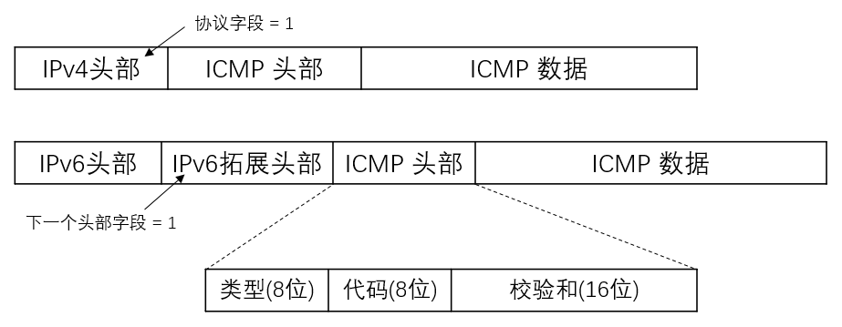
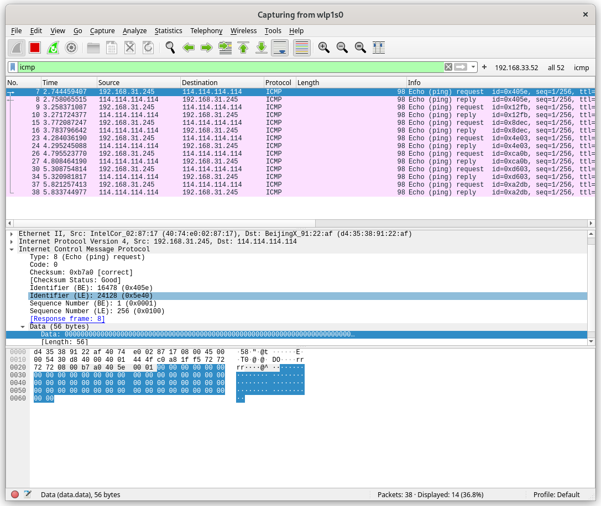

Rust 黑客编程 - ICMP 协议 ping 的简单实现
星期四, 6月 2, 2022
| 4
|
星期四, 6月 2, 2022
概述
记得在高中时期打开终端, ping 一个 IP ,这个操作在别人面前就会引来仰望大神的目光.
后来知道了底层是 ICMP 协议,然后就没有然后了, 仅停留在知道的层面, 入坑 Rust 以来,也没有什么特别的项目去做, 就从这方面入手,重温一下高中时期学习"黑客"技术时的热情,毕竟兴趣是最好的老师!
准备工作
Rust 网络操作的库,不算很多, 这里使用 pnet 这个库,基于 pcap.
测试抓包工具使用 wireshark
预备知识

这里我们使用 IPv4 协议
实现思路
- pnet 可以实现 2,3,4 层的数据包操作
- pnet 提供了各层数据包的协议的封装
- 在此应用中,可以使用
transport_channel 创建网络的通讯通道,使用其 rx 接收数据包, tx 发送数据包.
编码实现
创建项目, 并且添加基本以来 cargo add 的功能来自 cargo-edit 这个项目, 如果系统没有,可以使用 cargo install cargo-edit 安装该功能
1
2
3
4
5
6
|
cargo new icmp-demo
cd icmp-demo
cargo add pnet
cargo add pnet_transport
cargo add rand
cargo add anyhow
|
Demo 代码
1
2
3
4
5
6
7
8
9
10
11
12
13
14
15
16
17
18
19
20
21
22
23
24
25
26
27
28
29
30
31
32
33
34
35
36
37
38
39
40
41
42
43
44
45
46
47
48
49
50
51
52
53
54
55
56
57
58
59
60
61
62
63
64
65
66
67
68
69
70
71
72
73
74
75
76
77
78
79
80
81
82
83
84
|
use std::{net::{IpAddr}, time::{Instant, Duration}, sync::{Arc, RwLock}, env};
use pnet::packet::{ip::{IpNextHeaderProtocols,}, icmp::{IcmpTypes, echo_request::{IcmpCodes, MutableEchoRequestPacket}, echo_reply::EchoReplyPacket}, util, Packet};
use pnet_transport::{transport_channel, TransportProtocol};
use pnet_transport::TransportChannelType::Layer4;
use pnet_transport::{icmp_packet_iter};
use rand::random;
const ICMP_SIZE:usize = 64;
fn main() -> anyhow::Result<()>{
let args: Vec<String> = env::args().collect();
if(args.len() < 2) {
panic!("Usage: icmp-demo target_ip");
}
let target_ip:IpAddr = args[1].parse().unwrap();
println!("icpm echo request to target ip:{:#?}",target_ip);
// 确定协议 并且创建数据包通道 tx 为发送通道, rx 为接收通道
let protocol = Layer4(TransportProtocol::Ipv4(IpNextHeaderProtocols::Icmp));
let (mut tx, mut rx) = match transport_channel(4096, protocol) {
Ok((tx, rx)) => (tx, rx),
Err(e) => return Err(e.into()),
};
// 将 rx 接收到的数据包传化为 iterator
let mut iter = icmp_packet_iter(&mut rx);
loop {
let mut icmp_header:[u8;ICMP_SIZE] = [0;ICMP_SIZE];
let icmp_packet = create_icmp_packet(&mut icmp_header);
// println!("icmp_packet:{:?}",icmp_packet);
let timer = Arc::new(RwLock::new(Instant::now()));
// 发送 ICMP 数据包
tx.send_to(icmp_packet, target_ip)?;
match iter.next() {
// 匹配 EchoReplyPacket 数据包
Ok((packet, addr)) => match EchoReplyPacket::new(packet.packet()) {
Some(echo_reply) => {
if packet.get_icmp_type() == IcmpTypes::EchoReply {
let start_time = timer.read().unwrap();
//let identifier = echo_reply.get_identifier();
//let sequence_number = echo_reply.get_sequence_number();
let rtt = Instant::now().duration_since(*start_time);
println!(
"ICMP EchoReply received from {:?}: {:?} , Time:{:?}",
addr,
packet.get_icmp_type(),
rtt
);
} else {
println!(
"ICMP type other than reply (0) received from {:?}: {:?}",
addr,
packet.get_icmp_type()
);
}
}
None => {}
},
Err(e) => {
println!("An error occurred while reading: {}", e);
}
}
std::thread::sleep(Duration::from_millis(500));
}
Ok(())
}
/**
* 创建 icmp EchoRequest 数据包
*/
fn create_icmp_packet<'a>(icmp_header: &'a mut [u8]) -> MutableEchoRequestPacket<'a> {
let mut icmp_packet = MutableEchoRequestPacket::new(icmp_header).unwrap();
icmp_packet.set_icmp_type(IcmpTypes::EchoRequest);
icmp_packet.set_icmp_code(IcmpCodes::NoCode);
icmp_packet.set_identifier(random::<u16>());
icmp_packet.set_sequence_number(1);
let checksum = util::checksum(icmp_packet.packet(), 1);
icmp_packet.set_checksum(checksum);
icmp_packet
}
|
测试
1
2
3
|
cargo build
# 由于使用了 pcap 需要 root 权限
sudo ./target/debug/icmp-demo 114.114.114.114
|
运行结果
1
2
3
4
5
6
7
8
9
10
|
[liangdi@liangdi-x395 icmp-demo]$ sudo ./target/debug/icmp-demo 114.114.114.114
icpm echo request to target ip:114.114.114.114
ICMP EchoReply received from 114.114.114.114: IcmpType(0) , Time:14.525838ms
ICMP EchoReply received from 114.114.114.114: IcmpType(0) , Time:9.570341ms
ICMP EchoReply received from 114.114.114.114: IcmpType(0) , Time:11.355756ms
ICMP EchoReply received from 114.114.114.114: IcmpType(0) , Time:12.618713ms
ICMP EchoReply received from 114.114.114.114: IcmpType(0) , Time:15.448623ms
ICMP EchoReply received from 114.114.114.114: IcmpType(0) , Time:11.289961ms
ICMP EchoReply received from 114.114.114.114: IcmpType(0) , Time:11.169053ms
ICMP EchoReply received from 114.114.114.114: IcmpType(0) , Time:13.064115ms
|
wireshark 中的结果(wireshark 可以直接使用 icmp 这个过滤器过滤数据包)

如果做以下测试,结果会是另外一种景象
1
|
sudo ./target/debug/icmp-demo 127.0.0.1
|
输出结果:
1
2
3
4
5
6
7
8
9
10
11
12
|
[liangdi@liangdi-x395 icmp-demo]$ sudo ./target/debug/icmp-demo 127.0.0.1
icpm echo request to target ip:127.0.0.1
ICMP type other than reply (0) received from 127.0.0.1: IcmpType(8)
ICMP EchoReply received from 127.0.0.1: IcmpType(0) , Time:72.817µs
ICMP type other than reply (0) received from 127.0.0.1: IcmpType(8)
ICMP EchoReply received from 127.0.0.1: IcmpType(0) , Time:75.443µs
ICMP type other than reply (0) received from 127.0.0.1: IcmpType(8)
ICMP EchoReply received from 127.0.0.1: IcmpType(0) , Time:77.316µs
ICMP type other than reply (0) received from 127.0.0.1: IcmpType(8)
ICMP EchoReply received from 127.0.0.1: IcmpType(0) , Time:79.861µs
ICMP type other than reply (0) received from 127.0.0.1: IcmpType(8)
ICMP EchoReply received from 127.0.0.1: IcmpType(0) , Time:78.057µs
|
可以看到输出了 IcmpType(8) 的数据包, 这就是 EchoRequest 的类型, 由于我们监听了本地的数据包接收通道,所以发往 127.0.0.1 的数据包也被解析了.
小结
Demo 简单的实现了 icmp echo request 的请求和回显功能, 相比 ping 的功能还相差很多, 不过基本了解了 pnet 这个包的使用方式,以及了解了 ICMP 协议的基本用法, 进阶使用就留给大家思考,其中一些想法会在后续文章中再去实现.
- ping 命令有很多参数, 比如设置 icmp 数据包大小 , 请求次数等, 这些可以进阶去实现.
- ping 可以直接解析域名, demo 中为做处理, 所以无法直接使用域名.
- demo 中使用 Layer4 层发送数据包,所以隐藏了 IP 层的信息, 可以使用 Layer3 层发送,然后就可以自己构造 IP 头, 实现诸如 IP 伪装等功能.
- ICMP 可以发送一定的 payload ,所以 icmp flood 怎么实现?
- Ping of death (古老的漏洞) 怎么实现?